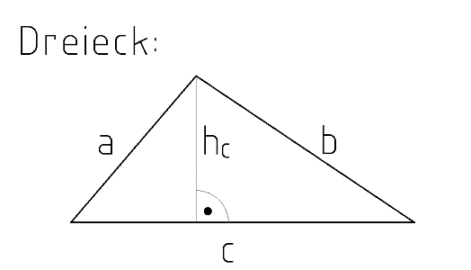
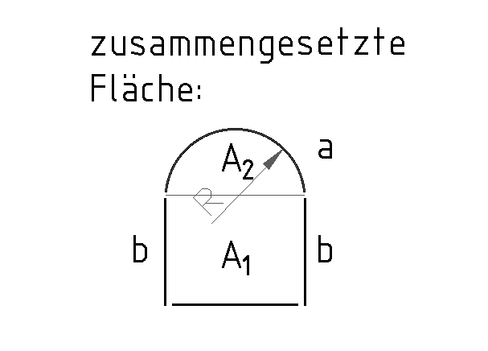

3 Dreieck und zusammengesetzte Flächen
Zuerst die Pflicht-Aufgaben (★, ★★). Die Extra-Aufgabe (★★★) am Ende ist freiwillig.
Tippe in die Kästchen. Dann tippe auf „Prüfen“.
Grün = richtig, Rot = schau noch einmal.
Fläche vom Dreieck

c = Grundlinie (die Seite unten)
hc = Höhe (steht senkrecht auf der Grundlinie c)
A = c · hc2
Kurz gesagt: Grundlinie mal Höhe durch 2.
Ein Dreieck ist genau die Hälfte von einem Rechteck. Darum : 2.
Aufgabe 1 ★
Berechne die Fläche vom Dreieck.
| c = 7 cm, hc = 3 cm: A = | cm² |
| c = 12 cm, hc = 5 cm: A = | cm² |
Zusammengesetzte Fläche

Zerlege die Fläche in einfache Teile. Dann zähle zusammen:
A = A1 + A2
Rechteck: A1 = b · c (c = Breite unten)
Halbkreis: A2 = D² · π : 8 (halbe Kreisfläche, D = 2 · R)
Aufgabe 2 ★★

Gegeben: c = 73 mm, b = 1,8 cm
Berechne die Teilflächen, die ganze Fläche A, den Radius R und die Bogenlänge a.
Der Durchmesser vom Halbkreis ist so lang wie c. Rechne zuerst alles in mm (b = 18 mm). Bogenlänge vom Halbkreis: a = D · π : 2.
| Radius R = | mm |
| Halbkreis A2 = | mm² |
| : 100 = | cm² |
| Rechteck A1 = 18 · 73 = | mm² |
| : 100 = | cm² |
| Fläche A = A1 + A2 = | cm² |
| Bogenlänge a = | mm |
| : 100 = | dm |
Extra: Wenn du noch Zeit hast ★★★
Pflicht geschafft! Du darfst hier aufhören.
Diese Aufgabe ist freiwillig. Hier hat die Fläche drei Teile.
Aufgabe 3 ★★★

Gegeben: R = 39 mm, b = 1,8 cm, d = 2,3 cm
Die Fläche besteht aus Halbkreis, Rechteck und Dreieck. Berechne alle Teile und die ganze Fläche A.
Das Dreieck hat die Grundlinie D und die Höhe d. Rechne in cm: R = 3,9 cm.
| Durchmesser D = | cm |
| Halbkreis A2 = | cm² |
| Rechteck A1 = | cm² |
| Dreieck A3 = | cm² |
| Fläche A = | cm² |
| Bogenlänge a = | dm |